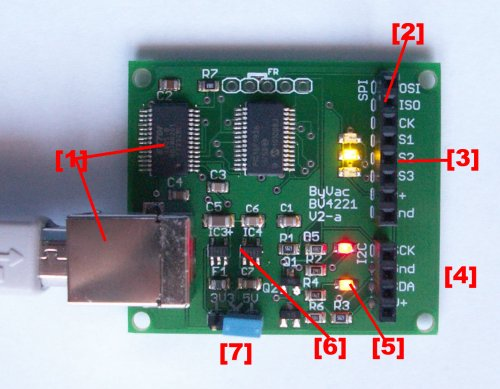

Starbase ByVac Demonstrator
See the PDF manual for the BV4221 I2C and SPI converter.

USB presents itself as a serial COM port
SPI Interface
Three Chip select lines with LED indicators that illuminate when the CS is low
I2C Interface
LEDs that monitor the clock and data lines
On board 3.3V & 5V regulators
Voltage selection
See: http://stores.ebay.co.uk/ByVac-Electronics